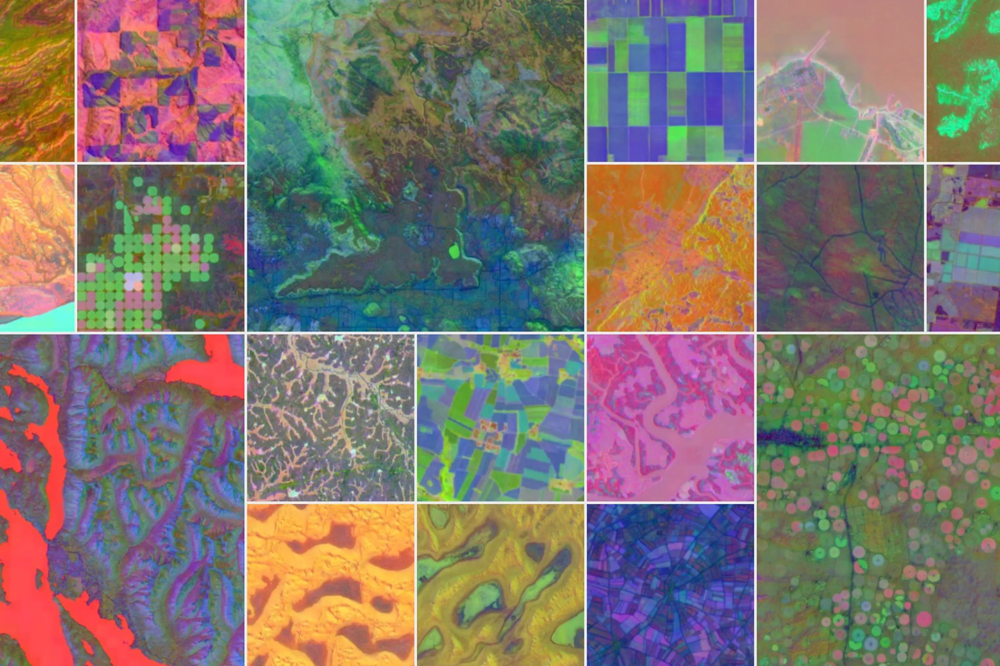

קולומבוס גילה את אמריקה, ולפי האגדה, גם את העובדה שהעולם לא שטוח.
פורסם במקור ב LinkedIn
קולומבוס גילה את אמריקה, ולפי האגדה, גם את העובדה שהעולם לא שטוח.
עכשיו, גוגל מנסים לגלות את פני העולם מחדש - הפעם בעזרת אינטיליגנציה מלאכותית.
DeepMind, חברת הבת של גוגל, הציגה לאחרונה את AlphaEarth - מודל AI שממפה את פני כדור הארץ בדיוק חסר תקדים, כמעט בזמן אמת, בלי לוויין פיזי.
במקום לשלוח מצלמות לחלל, הם בנו "לוויין וירטואלי": מערכת שמאחדת כמויות אדירות של מידע מלוויינים קיימים, תחנות קרקע, טקסטים גאוגרפיים ומודלים אקלימיים ומתרגמת את כולם לשכבת הבנה דחוסה במיוחד, שממנה אפשר להפיק כל מפה שרוצים.
המערכת כבר מדויקת יותר בעשרות אחוזים ממודלים קודמים, ויעילה פי 16 מבחינת נפח נתונים. אבל מה שמעניין באמת הוא מה עושים איתה: מעקב אחר בירוא יערות באמזונס, גילוי מחדש של מערכות אקולוגיות באפריקה, וחיזוי שינויים סביבתיים בעידן שבו העולם משתנה מהר יותר ממה שידענו למדוד.
וכמו שקולומבוס לא חיפש את אמריקה, גם DeepMind לא באמת מחפשת רק עוד שכבת מפה. מה שהם מפתחים הוא תשתית תפיסתית: דרך חדשה לראות את העולם - במדויק, באופן מתעדכן, ובקנה מידה עולמי.
בעידן של שינוי אקלימי, זה אולי לא פחות רדיקלי מגילוי יבשת.
